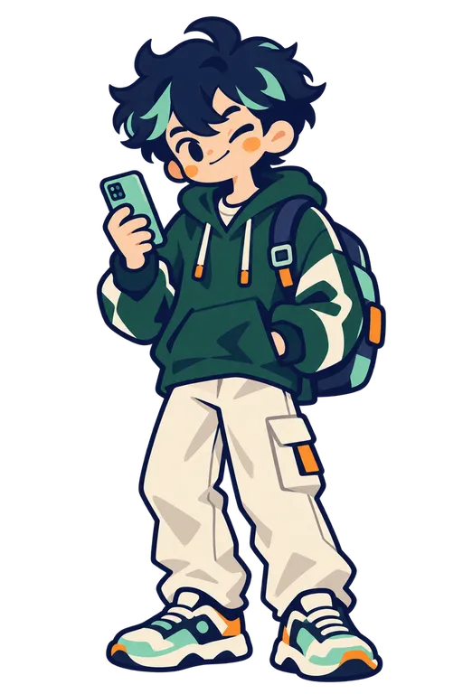

<!DOCTYPE html>
<html lang="zh-CN">
<head>
<meta charset="utf-8" />
<meta name="viewport" content="width=device-width, initial-scale=1, viewport-fit=cover" />
<title>含人量 · 大学生人类状态检测站</title>
<style>
  :root {
    --ink: #16233d;
    --ink-2: rgba(22, 35, 61, 0.72);
    --ink-3: rgba(22, 35, 61, 0.48);
    --ink-4: rgba(22, 35, 61, 0.18);
    --paper: #f3f6fb;
    --white: #ffffff;
    --signal: #62e6d2;
    --accent: #9c8cff;
    --warn: #c65d4e;
    --hair: rgba(22, 35, 61, 0.12);
    --hair-soft: rgba(22, 35, 61, 0.07);
    --mono: 'SF Mono', 'DIN Alternate', 'Roboto Mono', Menlo, Consolas, monospace;
    --sans: -apple-system, BlinkMacSystemFont, 'PingFang SC', 'HarmonyOS Sans SC',
      'Noto Sans CJK SC', 'Microsoft YaHei', sans-serif;
    --gutter: 24px;
  }

  * { box-sizing: border-box; }

  html { -webkit-text-size-adjust: 100%; }

  body {
    margin: 0;
    background: #dce5f1;
    color: var(--ink);
    font-family: var(--sans);
    line-height: 1.6;
    -webkit-font-smoothing: antialiased;
    -moz-osx-font-smoothing: grayscale;
    -webkit-tap-highlight-color: transparent;
  }

  .frame {
    max-width: 420px;
    min-height: 100vh;
    margin: 0 auto;
    background: linear-gradient(180deg, #fbfdff 0%, var(--paper) 24%, var(--paper) 100%);
    box-shadow: 0 0 0 1px rgba(17, 17, 16, 0.06), 0 20px 50px rgba(17, 17, 16, 0.14);
    padding: 0 var(--gutter) 72px;
    overflow: hidden;
  }

  /* ============ 通用排版 ============ */

  .eyebrow {
    display: flex;
    align-items: center;
    gap: 8px;
    font-family: var(--mono);
    font-size: 10.5px;
    letter-spacing: 1.8px;
    line-height: 1.4;
    color: var(--ink-3);
    margin: 0 0 16px;
  }
  .eyebrow i {
    width: 7px;
    height: 7px;
    flex: none;
    background: var(--signal);
    border: 1px solid var(--ink);
    border-radius: 50%;
  }

  .h1 {
    font-size: 31px;
    line-height: 1.34;
    font-weight: 700;
    letter-spacing: -0.6px;
    margin: 0;
  }
  /* 主题词只用下划线强调，不用背景块，避免行间叠色 */
  .h1 u {
    text-decoration: none;
    border-bottom: 6px solid var(--signal);
    padding-bottom: 2px;
  }

  .h2 {
    font-size: 23px;
    line-height: 1.42;
    font-weight: 700;
    letter-spacing: -0.3px;
    margin: 0;
  }

  .body {
    font-size: 15px;
    line-height: 1.9;
    color: var(--ink-2);
    margin: 16px 0 0;
  }

  .prose {
    font-size: 15px;
    line-height: 1.95;
    color: var(--ink-2);
    letter-spacing: 0.2px;
    margin: 0;
  }

  .foot {
    font-size: 11.5px;
    line-height: 1.8;
    color: rgba(17, 17, 16, 0.34);
    text-align: center;
    margin: 28px 0 0;
  }

  /* ============ 顶部品牌条 ============ */

  .topbar {
    display: flex;
    align-items: center;
    justify-content: space-between;
    height: 62px;
    border-bottom: 1px solid var(--hair);
    margin-bottom: 32px;
  }
  .topbar .mark {
    font-size: 16px;
    font-weight: 700;
    letter-spacing: 3px;
  }
  .topbar .sub {
    font-family: var(--mono);
    font-size: 9px;
    letter-spacing: 1.4px;
    color: var(--ink-3);
  }

  /* ============ 参数表 ============ */

  .spec {
    margin-top: 28px;
    border-top: 1px solid var(--hair);
  }
  .spec-row {
    display: flex;
    align-items: center;
    justify-content: space-between;
    height: 42px;
    border-bottom: 1px solid var(--hair-soft);
    font-size: 13px;
  }
  .spec-row span { color: var(--ink-3); }
  .spec-row b {
    font-family: var(--mono);
    font-weight: 500;
    font-size: 13px;
    letter-spacing: 0.5px;
  }

  /* ============ 按钮 ============ */

  .btn {
    display: block;
    width: 100%;
    height: 52px;
    border: 1px solid var(--ink);
    border-radius: 14px;
    background: var(--ink);
    color: var(--paper);
    font-family: var(--sans);
    font-size: 15px;
    font-weight: 600;
    letter-spacing: 2px;
    cursor: pointer;
    margin-top: 22px;
    box-shadow: 0 8px 18px rgba(17, 17, 16, 0.1);
  }
  .btn:active { opacity: 0.86; }
  .btn.signal { background: var(--signal); color: var(--ink); }
  .btn.ghost {
    background: transparent;
    color: var(--ink);
    border-color: var(--ink-4);
    margin-top: 12px;
    font-weight: 500;
    box-shadow: none;
  }

  .link {
    background: none;
    border: none;
    padding: 0;
    font-family: var(--sans);
    font-size: 13px;
    color: var(--ink-3);
    letter-spacing: 0.5px;
    cursor: pointer;
  }
  .link:disabled { opacity: 0.3; cursor: default; }

  /* 首页次要入口，做成一排文字链接，不再占用按钮层级 */
  .altrow {
    display: flex;
    flex-wrap: wrap;
    gap: 8px 22px;
    margin-top: 20px;
  }

  /* 体验版的结果一览/邀请入口仅供验收，不占用真实首页的注意力。 */
  .demo-tools { display: none; }

  .home-kicker {
    display: inline-block;
    padding: 6px 10px;
    border-radius: 999px;
    background: var(--signal);
    color: var(--ink);
    font-size: 11px;
    letter-spacing: 1.5px;
  }
  .home-page { text-align: center; }
  .home-page .topbar { text-align: left; }
  .home-page .home-kicker { margin-top: 42px; }
  .home-page .h1 { margin-top: 24px; font-size: 32px; line-height: 1.28; }
  .home-slogan {
    margin: 18px 0 0;
    color: var(--ink-2);
    font-size: 17px;
    line-height: 1.65;
  }
  .home-page .btn { margin-top: 34px; }
  .home-meta {
    margin-top: 72px;
    color: var(--ink-3);
    font-size: 11px;
    letter-spacing: 1px;
    text-align: center;
  }

  .home-page .home-slogan {
    max-width: 300px;
    margin-left: auto;
    margin-right: auto;
  }
  .home-page .btn { max-width: 320px; margin-left: auto; margin-right: auto; }

  /* ============ 答题页 ============ */

  .qhead {
    display: flex;
    align-items: center;
    justify-content: space-between;
    padding-bottom: 14px;
    border-bottom: 1px solid var(--ink);
    margin-bottom: 28px;
  }
  .q-no {
    font-family: var(--mono);
    font-size: 40px;
    line-height: 1;
    font-weight: 400;
    letter-spacing: -1px;
    font-variant-numeric: tabular-nums;
  }
  .q-tag {
    font-family: var(--mono);
    font-size: 9px;
    letter-spacing: 1.4px;
    color: var(--ink-3);
  }

  .q-text {
    font-size: 20px;
    line-height: 1.66;
    font-weight: 600;
    letter-spacing: -0.2px;
    margin: 0 0 28px;
  }

  .qprogress {
    height: 6px;
    margin: -16px 0 28px;
    border-radius: 999px;
    overflow: hidden;
    background: rgba(17, 17, 16, 0.1);
  }
  .qprogress i {
    display: block;
    height: 100%;
    border-radius: inherit;
    background: var(--signal);
    transition: width 0.18s ease;
  }

  .opts { border-top: 0; }
  .opt {
    display: flex;
    align-items: center;
    width: 100%;
    text-align: left;
    background: rgba(255, 255, 255, 0.62);
    border: 1px solid var(--hair);
    border-radius: 14px;
    padding: 16px 15px;
    margin-bottom: 10px;
    font-family: var(--sans);
    font-size: 14.5px;
    line-height: 1.65;
    color: var(--ink);
    cursor: pointer;
    transition: background 0.12s ease, color 0.12s ease;
  }
  .opt .t { flex: 1; min-width: 0; }
  .opt.on {
    background: var(--ink);
    color: var(--paper);
    border-color: var(--ink);
    box-shadow: 0 8px 16px rgba(22, 35, 61, 0.12);
  }

  .qfoot { display: flex; gap: 24px; margin-top: 22px; }

  /* ============ 结算页 ============ */

  .report-head {
    display: flex;
    align-items: center;
    justify-content: space-between;
    padding-bottom: 12px;
    border-bottom: 1px solid var(--ink);
    margin-bottom: 32px;
  }
  .report-head .t { font-size: 15px; font-weight: 700; letter-spacing: 3px; }
  .report-head .r {
    font-family: var(--mono);
    font-size: 9px;
    letter-spacing: 1.4px;
    color: var(--ink-3);
  }

  .hero { text-align: center; }
  .hero-label {
    font-size: 11.5px;
    letter-spacing: 6px;
    text-indent: 6px;
    color: var(--ink-3);
  }
  .hero-num {
    font-family: var(--mono);
    font-size: 84px;
    line-height: 1.1;
    font-weight: 500;
    letter-spacing: -2px;
    font-variant-numeric: tabular-nums;
    margin: 2px 0 0;
  }
  .hero-num span {
    font-size: 26px;
    letter-spacing: 0;
    color: var(--ink-3);
    margin-left: 4px;
  }
  .hero-bar {
    height: 10px;
    border: 1px solid var(--ink);
    border-radius: 999px;
    overflow: hidden;
    background: var(--white);
    margin-top: 16px;
  }
  .hero-bar i { display: block; height: 100%; background: var(--signal); }
  .hero-scale {
    display: flex;
    justify-content: space-between;
    align-items: center;
    font-family: var(--mono);
    font-size: 9.5px;
    color: var(--ink-3);
    margin-top: 8px;
  }
  .hero-scale .mid { font-family: var(--sans); font-size: 11px; }
  .hero-caption {
    font-size: 11.5px;
    line-height: 1.6;
    color: var(--ink-3);
    margin-top: 4px;
  }

  .species {
    text-align: center;
    margin-top: 36px;
  }
  .species-name {
    display: inline-block;
    font-size: 24px;
    font-weight: 700;
    letter-spacing: 1px;
    padding-bottom: 4px;
    border-bottom: 6px solid var(--signal);
  }
  .species-label {
    color: var(--ink-3);
    font-family: var(--mono);
    font-size: 10px;
    letter-spacing: 2px;
    margin-bottom: 6px;
  }
  .species-verdict {
    font-size: 15px;
    line-height: 1.8;
    color: var(--ink-2);
    margin: 18px 0 0;
  }
  .portrait-verdict {
    margin: 0 0 14px;
    padding-left: 14px;
    border-left: 3px solid var(--aqua);
    color: var(--ink-2);
    font-size: 16px;
    line-height: 1.8;
    font-weight: 650;
  }
  .hero-verdict {
    margin: 18px 8px 0;
    padding: 13px 16px;
    border: 1px solid rgba(22, 35, 61, 0.1);
    border-left: 3px solid var(--aqua);
    border-radius: 14px;
    background: rgba(255, 255, 255, 0.56);
    text-align: left;
  }

  /* ============ 区块 ============ */

  .block { margin-top: 44px; }
  .block-head {
    display: flex;
    align-items: center;
    gap: 12px;
    padding-bottom: 12px;
    border-bottom: 1px solid var(--hair);
    margin-bottom: 20px;
  }
  .block-no {
    font-family: var(--mono);
    font-size: 11px;
    color: var(--ink-3);
    flex: none;
  }
  .block-title { font-size: 13.5px; font-weight: 700; letter-spacing: 3px; }

  /* 六维 */
  .dim {
    display: flex;
    align-items: center;
    gap: 12px;
    padding: 11px 0;
    border-bottom: 1px solid var(--hair-soft);
  }
  .dim:last-child { border-bottom: none; }
  .dim .n {
    flex: none;
    width: 66px;
    font-size: 13px;
    color: var(--ink-2);
    letter-spacing: 0.5px;
  }
  .dim .n.key { font-weight: 700; color: var(--ink); }
  .dim .t {
    flex: 1;
    min-width: 0;
    height: 6px;
    background: rgba(17, 17, 16, 0.09);
    border-radius: 999px;
    overflow: hidden;
  }
  .dim .t i { display: block; height: 100%; background: var(--ink); border-radius: 999px; }
  .dim .t i.key { background: var(--signal); box-shadow: inset 0 0 0 1px rgba(17, 17, 16, 0.4); }
  .dim .v {
    flex: none;
    width: 30px;
    text-align: right;
    font-family: var(--mono);
    font-size: 12px;
    font-variant-numeric: tabular-nums;
  }

  /* 人味分布 */
  .cell + .cell { margin-top: 24px; }
  .cell-t {
    font-size: 12px;
    letter-spacing: 2px;
    color: var(--ink-3);
    margin-bottom: 8px;
  }
  .cell-t.warn { color: var(--warn); }
  .cell p { font-size: 14.5px; line-height: 1.8; color: var(--ink-2); margin: 0; }

  /* 面板 */
  .panel {
    background: var(--white);
    border: 1px solid var(--hair);
    border-radius: 14px;
    padding: 20px;
    box-shadow: 0 8px 22px rgba(17, 17, 16, 0.04);
  }
  .panel .big {
    font-size: 20px;
    font-weight: 700;
    letter-spacing: 1px;
    margin: 0 0 10px;
  }
  .panel p { font-size: 14px; line-height: 1.8; color: var(--ink-2); margin: 0; }

  .quote {
    border-left: 3px solid var(--signal);
    padding: 4px 0 4px 14px;
    font-size: 14px;
    line-height: 1.8;
    color: var(--ink-2);
  }
  .quote + .quote { margin-top: 14px; }
  .quote.dim2 { border-left-color: var(--ink-4); color: var(--ink-3); font-size: 13px; }

  .note-line {
    margin-top: 14px;
    padding-top: 14px;
    border-top: 1px solid var(--hair);
    font-size: 12.5px;
    color: var(--ink-3);
  }

  /* ============ 双人 ============ */

  .duo { display: grid; grid-template-columns: 1fr 1fr; gap: 12px; }
  .duo .panel { text-align: center; padding: 18px 12px; }
  .duo .who {
    font-family: var(--mono);
    font-size: 9.5px;
    letter-spacing: 1.6px;
    color: var(--ink-3);
    margin-bottom: 10px;
  }
  .duo .nm { font-size: 14.5px; font-weight: 600; line-height: 1.55; }
  .duo .sc {
    font-family: var(--mono);
    font-size: 22px;
    margin-top: 8px;
    font-variant-numeric: tabular-nums;
  }
  .duo .sc span { font-size: 11px; color: var(--ink-3); margin-left: 2px; }

  /* ============ 表单 ============ */

  .field { margin-top: 24px; }
  .field-t {
    font-size: 12px;
    letter-spacing: 2px;
    color: var(--ink-3);
    margin-bottom: 10px;
  }
  .field-t b {
    font-family: var(--mono);
    font-size: 14px;
    font-weight: 500;
    color: var(--ink);
    letter-spacing: 0;
  }
  .select {
    width: 100%;
    height: 46px;
    border: 1px solid var(--ink-4);
    border-radius: 6px;
    background: var(--white);
    padding: 0 12px;
    font-family: var(--sans);
    font-size: 14px;
    color: var(--ink);
  }
  .range { width: 100%; margin-top: 4px; accent-color: #111110; }

  /* ============ 品牌收束 ============ */

  .brand {
    margin: 56px calc(var(--gutter) * -1) -64px;
    padding: 32px var(--gutter) 40px;
    background: var(--ink);
    color: var(--paper);
    text-align: center;
  }
  .brand .w {
    font-size: 24px;
    font-weight: 700;
    letter-spacing: 12px;
    text-indent: 12px;
  }
  .brand .e {
    font-family: var(--mono);
    font-size: 9px;
    letter-spacing: 3px;
    color: rgba(246, 245, 240, 0.45);
    margin-top: 12px;
  }

  /* ============ 结果一览（预览用） ============ */

  .gallery {
    display: grid;
    grid-template-columns: 1fr 1fr;
    gap: 10px;
    margin-top: 20px;
  }
  .chip {
    display: block;
    width: 100%;
    text-align: left;
    background: var(--white);
    border: 1px solid var(--hair);
    border-radius: 12px;
    padding: 12px 12px 13px;
    font-family: var(--sans);
    cursor: pointer;
  }
  .chip:active { background: var(--signal); }
  .chip .ci {
    font-family: var(--mono);
    font-size: 9px;
    letter-spacing: 1px;
    color: var(--ink-3);
  }
  .chip .cn {
    font-size: 14px;
    font-weight: 600;
    line-height: 1.45;
    margin-top: 4px;
    letter-spacing: 0.3px;
  }
  .chip .cs {
    font-family: var(--mono);
    font-size: 10.5px;
    color: var(--ink-3);
    margin-top: 5px;
  }

  /* ============ 专属物种小人 ============ */

  .avatar-wrap {
    width: 152px;
    height: 152px;
    margin: -12px auto 8px;
  }
  .avatar-art {
    display: block;
    width: 100%;
    height: 100%;
    object-fit: contain;
    filter: drop-shadow(0 8px 10px rgba(22, 35, 61, 0.12));
  }
  .avatar-mini {
    width: 64px;
    height: 64px;
    margin: 8px auto 10px;
  }
  .chip-avatar {
    width: 66px;
    height: 66px;
    margin-bottom: 7px;
  }

  .result-hero {
    padding: 18px 14px 26px;
    background: linear-gradient(145deg, #ffffff 0%, #eef8fb 100%);
    border: 1px solid rgba(22, 35, 61, 0.1);
    border-radius: 22px;
  }
  .result-hero .species {
    margin-top: 0;
  }
  .result-actions {
    margin-top: 16px;
  }
  .result-bridge {
    margin: 0 0 16px;
    padding: 16px 18px 17px;
    border: 1px solid rgba(22, 35, 61, 0.1);
    border-radius: 16px;
    background: rgba(255, 255, 255, 0.72);
    text-align: center;
  }
  .bridge-label {
    color: var(--ink-3);
    font-family: var(--mono);
    font-size: 10px;
    letter-spacing: 2px;
    text-transform: uppercase;
  }
  .bridge-title {
    margin-top: 5px;
    font-size: 17px;
    font-weight: 700;
  }
  .result-bridge p {
    margin: 5px 0 0;
    color: var(--ink-2);
    font-size: 13px;
    line-height: 1.65;
  }
  .btn.quiet {
    background: rgba(255, 255, 255, 0.45);
    color: var(--ink-2);
    border-color: var(--hair);
    box-shadow: none;
    font-size: 13px;
  }
  .share-status {
    padding-top: 10px;
    color: #5d55b8;
    font-size: 12px;
    text-align: center;
  }
  .share-hint {
    margin: 10px 0 0;
    color: var(--ink-3);
    font-size: 11px;
    line-height: 1.55;
    text-align: center;
  }
  .portrait-note,
  .section-note {
    color: var(--ink-3);
    font-size: 12px;
    line-height: 1.7;
  }
  .portrait-note {
    margin: -8px 0 16px;
    padding: 12px 13px;
    background: #e4ecf8;
    border-radius: 12px;
  }
  .section-note { margin: -8px 0 4px; }
  .insight-card {
    padding: 14px 15px 15px;
    border-radius: 14px;
    margin-bottom: 10px;
  }
  .insight-card:last-child { margin-bottom: 0; }
  .insight-positive {
    background: rgba(98, 230, 210, 0.2);
    border: 1px solid rgba(53, 170, 157, 0.2);
  }
  .insight-watch {
    background: rgba(156, 140, 255, 0.13);
    border: 1px solid rgba(93, 85, 184, 0.14);
  }
  .insight-card .cell-t { margin-bottom: 7px; color: var(--ink-3); }
  .insight-card p { margin: 0; color: var(--ink-2); font-size: 13px; line-height: 1.75; }
  .radar-demo {
    width: 240px;
    height: 240px;
    margin: -8px auto 4px;
  }
  .radar-svg { display: block; width: 100%; height: 100%; overflow: visible; }
  .radar-grid { fill: none; stroke: rgba(22, 35, 61, 0.14); stroke-width: 1; }
  .radar-axis { stroke: rgba(22, 35, 61, 0.12); stroke-width: 1; }
  .radar-data { fill: rgba(98, 230, 210, 0.42); stroke: var(--ink); stroke-width: 2; stroke-linejoin: round; }
  .radar-svg circle { fill: var(--ink); }
  .radar-svg .key-dot { fill: var(--accent); }
  .radar-svg text { fill: var(--ink-3); font-size: 9px; font-family: var(--sans); }
  .share-action {
    margin-top: 12px;
    text-align: center;
  }
  .share-action .link { color: #5d55b8; }
  .duo .panel .avatar-mini { margin-top: 0; }

  @media (max-width: 360px) {
    .frame { padding-left: 18px; padding-right: 18px; }
    .h1 { font-size: 28px; }
    .avatar-wrap { width: 136px; height: 136px; }
  }

  @media (max-width: 360px) {
    .hero-num { font-size: 72px; }
    .h1 { font-size: 28px; }
  }
  .prose { white-space: pre-line; }
  .radar-demo { max-width: 100%; margin: 0 auto; }

  /* 物种鉴定卡：统一的暖纸色、插画舞台与交互反馈 */
  :root { --paper: #f8f7f2; --signal: #76e2c5; --accent: #a38bf1; }
  body { background: #e8e9e3; }
  .frame { background: radial-gradient(ellipse at 100% 0, #e3f3eb 0, transparent 36%), #f8f7f2; }
  .topbar { border-bottom-style: dashed; }
  .home-page .home-kicker { margin-top: 12px; background: #e2eee7; border: 1px solid #cdded3; color: #3e6456; }
  .home-page .h1 { font-size: 48px; line-height: 1.16; letter-spacing: -2px; margin-top: 20px; }
  .home-page .h1 u { border: 0; position: relative; background: linear-gradient(transparent 76%, #bdebd9 76%); }
  .home-page .home-slogan { font-size: 13px; margin-top: 22px; }
  .specimen-stage { position: relative; height: 242px; margin: 14px -10px 0; }
  .stage-orbit { position: absolute; left: 6%; right: 6%; bottom: 37px; height: 91px; border: 1px dashed #b8cfc2; border-radius: 50%; background: #e6eee4; transform: rotate(-7deg); }
  .specimen { position: absolute; bottom: 62px; width: 31%; display: flex; flex-direction: column; align-items: center; }
  .specimen img { width: 100%; height: 136px; object-fit: contain; filter: drop-shadow(0 9px 5px #263c2915); transition: transform .25s; }
  .specimen span { font-size: 10px; padding: 3px 8px; border-radius: 6px; background: #fffdf7; border: 1px solid #dce1d8; white-space: nowrap; }
  .side-left { left: 0; transform: rotate(-9deg); }
  .main-specimen { left: 34%; z-index: 2; bottom: 53px; }
  .main-specimen img { height: 172px; }
  .main-specimen span { background: #233b36; color: white; border-color: #233b36; }
  .side-right { right: 0; transform: rotate(9deg); }
  .stage-caption { position: absolute; bottom: 5px; left: 0; right: 0; font-size: 11px; color: #69796f; letter-spacing: 1px; }
  .home-page .btn { margin-top: 22px; }
  .home-meta { margin-top: 22px; }
  .btn { border-radius: 16px; transition: transform .18s, box-shadow .18s, background .18s; }
  .btn:active { transform: translateY(2px) scale(.985); }
  .btn:focus-visible, .opt:focus-visible, .link:focus-visible { outline: 3px solid #8b70d7; outline-offset: 4px; }
  .opt { background: #fffefa; border: 1px solid #dedfd7; border-radius: 16px; box-shadow: 0 3px 0 #263c2906; padding: 18px; transition: border-color .18s, transform .18s, background .18s; }
  .opt::after { content: ''; width: 16px; height: 16px; flex-shrink: 0; border: 1px solid #b9c4bc; border-radius: 50%; margin-left: 12px; }
  .opt.on { background: #def4e9; border-color: #459b7e; transform: scale(.985); }
  .opt.on::after { background: #285c49; box-shadow: inset 0 0 0 4px #def4e9; }
  .result-hero { background: radial-gradient(ellipse at 50% 30%, #e2f4e9, #fffefa 72%); border: 1px solid #d9e1d6; border-radius: 28px; box-shadow: 0 10px 30px #30492f09; padding: 28px 18px 24px; }
  .species-label { letter-spacing: 3px; color: #648373; }
  .species-name { font-size: 27px; }
  .result-hero .avatar-wrap { background: radial-gradient(ellipse, #d9ecdb 0, transparent 68%); }
  .block { margin-top: 32px; }
  .block-head { border-bottom: 1px dashed #cdd5ca; padding-bottom: 13px; margin-bottom: 20px; }
  .block-no { color: #6d8c7a; }
  .portrait-note { background: #edece3; color: #73796b; }
  .portrait-verdict { border-color: #77c8a7; font-size: 17px; }
  .prose { font-size: 14px; line-height: 2; }
  .insight-card { border-radius: 18px; padding: 19px; }
  .insight-positive { background: #e8f1e7; border: 1px solid #d6e3d1; }
  .insight-watch { background: #eeebf6; border: 1px solid #e0d8ee; }
  .result-bridge { background: #263e36; color: #fffdf4; border: 0; padding: 24px 16px; border-radius: 20px; }
  .result-bridge p { color: #cadacf; }
  .bridge-title { font-size: 19px; }
  .partner-invite { display: block; margin-top: 16px; color: #376d58; font-size: 12px; text-align: left; line-height: 1.7; }
  .result-actions { padding: 22px 18px; border: 1px solid #d5dfd5; border-radius: 24px; background: #eef3eb; }
  .result-actions .result-bridge { padding: 0 0 12px; background: transparent; color: var(--ink); }
  .result-actions .result-bridge p { color: var(--ink-2); font-size: 13px; }
  .result-actions .btn { margin: 12px 0 0; }
  #again { margin-top: 24px; }
  @media (hover: hover) { .btn:hover { transform: translateY(-2px); box-shadow: 0 7px 16px #263c2915; } .opt:hover { border-color: #76ae95; } .specimen:hover img { transform: translateY(-7px); } }
  @media (max-width: 360px) { .home-page .h1 { font-size: 42px; } .specimen-stage { height: 216px; } .specimen img { height: 115px; } .main-specimen img { height: 148px; } .species-name { font-size: 24px; } }
  @media (prefers-reduced-motion: reduce) { *, *::before, *::after { transition: none !important; animation: none !important; } }


.home-page { padding-top: 54px; }
.home-page .home-kicker { margin-top: 0; font-size: 11px; letter-spacing: 2px; background: transparent; border: 0; }
.home-page .h1 { margin-top: 18px; font-size: 51px; }
.home-page .home-slogan { margin-top: 20px; }
.mystery-seal { position: relative; width: 228px; height: 228px; margin: 34px auto 30px; display: flex; flex-direction: column; align-items: center; justify-content: center; border-radius: 50%; background: radial-gradient(circle at 35% 25%, #f7fff8, #d6eee0); border: 1px solid #bbd5c7; box-shadow: 0 0 0 12px #edf2e9, 0 0 0 13px #dbe4d7, 0 20px 35px #365b3010; transform: rotate(-5deg); }
.mystery-seal::after { content: '尚未鉴定'; position: absolute; right: -12px; top: 20px; padding: 5px 12px; background: #eadffa; color: #6d508f; border: 1px solid #d4c2eb; border-radius: 8px; font-size: 11px; transform: rotate(14deg); }
.seal-caption { color: #416b59; letter-spacing: 4px; font-size: 12px; }
.mystery-seal strong { font-size: 90px; line-height: 1.3; font-weight: 600; color: #234538; }
.mystery-seal small { font-size: 28px; }
.seal-note { color: #547763; font-size: 11px; letter-spacing: 2px; }
.home-page .btn { margin-top: 32px; }
@media (max-height: 740px) { .home-page { padding-top: 30px; } .mystery-seal { width: 194px; height: 194px; margin-top: 26px; } .home-page .h1 { font-size: 44px; } }


/* AI 首页插画：主视觉与短文案 */
.home-page { padding-top: 42px; }
.home-page .home-kicker { display: inline-flex; align-items: center; gap: 7px; letter-spacing: 1.8px; color: #547463; }
.home-page .home-kicker::before { content: ''; width: 7px; height: 7px; border-radius: 50%; background: #73d4b3; box-shadow: 0 0 0 4px #e0f1e9; }
.home-page .h1 { font-size: 45px; line-height: 1.12; letter-spacing: -1.8px; margin-top: 19px; }
.home-page .h1 u { background: linear-gradient(transparent 70%, #bdebd9 70%); padding: 0 3px 2px; }
.home-page .home-slogan { margin-top: 18px; font-size: 12.5px; color: #64716b; }
.ai-hero { position: relative; width: 294px; height: 304px; margin: 10px auto 0; }
.ai-hero::before { content: ''; position: absolute; left: 50%; top: 30px; width: 225px; height: 225px; margin-left: -112px; border-radius: 50%; background: radial-gradient(circle, #e5eee5 0%, #edf2eb 62%, rgba(237,242,235,0) 100%); }
.ai-hero::after { content: ''; position: absolute; left: 68px; right: 68px; bottom: 22px; height: 14px; border-radius: 50%; background: #304b361a; filter: blur(6px); }
.ai-hero img { position: absolute; left: 50%; top: 0; transform: translateX(-50%); width: 244px; height: 300px; object-fit: contain; display: block; filter: drop-shadow(0 13px 8px #304b3614); z-index: 2; }
.home-page .btn { width: 306px; max-width: 100%; margin-top: 8px; background: #283d35; box-shadow: 0 9px 22px #283d3520; }
.home-page .home-meta { margin-top: 16px; color: #829087; }
@media (max-height: 740px) { .home-page { padding-top: 27px; } .home-page .h1 { font-size: 40px; } .ai-hero { height: 252px; width: 268px; } .ai-hero img { height: 250px; width: 204px; } .ai-hero::before { top: 20px; width: 190px; height: 190px; margin-left: -95px; } }
  .result-hero .avatar-wrap { width: 180px; height: 180px; margin: 0 auto 22px; }
  .timeline-demo-preview { max-width: 250px; margin: 18px auto 24px; overflow: hidden; border: 1px solid #d9e1d6; border-radius: 14px; background: #f7f6f2; text-align: center; box-shadow: 0 10px 24px #16233d16; }
  .timeline-demo-avatar { display: block; width: 160px; height: 165px; object-fit: contain; margin: 12px auto 8px; }
  .timeline-demo-title { padding: 0 12px; font-size: 19px; font-weight: 700; }
  .timeline-demo-label { margin-top: 12px; color: #66716a; font-size: 12px; }
  .timeline-demo-score { color: #263e36; font-size: 46px; line-height: 1.2; }
  .timeline-demo-preview p { padding: 0 16px; font-size: 11px; line-height: 1.5; }
  .timeline-demo-footer { padding: 12px; background: #263e36; color: #fffdf4; font-size: 14px; }
</style>
</head>
<body>
  <div class="frame"><div id="app"></div></div>
  <script>
"use strict";
(() => {
  // miniprogram/config/content.ts
  var CONTENT_VERSION = "content-v2.0";
  var DISCLAIMER = "本测试用于娱乐和生活状态观察，不构成心理或医学评估。结果只描述近期状态，不是永久人格。";

  // miniprogram/config/questions.ts
  var QUESTIONS = [
    {
      id: "Q01",
      index: 1,
      text: "朋友临时放你鸽子，周六下午突然空出来了。你更可能？",
      dimensions: ["R", "S"],
      options: [
        { id: "Q01-A", text: "正好，回宿舍躺会儿，今天就不折腾了。", scores: { R: 0, S: 0 } },
        { id: "Q01-B", text: "在群里问一句：“有人晚上吃饭吗？”", scores: { R: 1, S: 3 } },
        { id: "Q01-C", text: "自己下楼买点东西，顺便在附近走走。", scores: { R: 3, S: 0 } },
        { id: "Q01-D", text: "想到一个最近没见的人，直接问他有没有空。", scores: { R: 3, S: 3 } }
      ]
    },
    {
      id: "Q02",
      index: 2,
      text: "晚上十点，群里突然有人问：“下楼吃宵夜吗？”你第一反应？",
      dimensions: ["S", "P"],
      options: [
        { id: "Q02-A", text: "先问都有谁、去哪，再决定。", scores: { S: 2, P: 1 } },
        { id: "Q02-B", text: "看到了但先不回，等他们把地方定下来。", scores: { S: 0, P: 1 } },
        { id: "Q02-C", text: "回一句“走”，穿鞋下楼，吃什么路上再说。", scores: { S: 3, P: 3 } },
        { id: "Q02-D", text: "太晚不想跑远，但如果就在楼下可以去。", scores: { S: 2, P: 2 } }
      ]
    },
    {
      id: "Q03",
      index: 3,
      text: "上午下课，离下一节课还有三个小时。你通常会？",
      dimensions: ["P", "E"],
      options: [
        { id: "Q03-A", text: "去最熟悉的地方坐着，做作业、睡觉或者刷手机。", scores: { P: 0, E: 0 } },
        { id: "Q03-B", text: "不设目的，在校园里随便走走再决定。", scores: { P: 3, E: 2 } },
        { id: "Q03-C", text: "搜一家没去过的店或者附近的小活动，过去看看。", scores: { P: 2, E: 3 } },
        { id: "Q03-D", text: "跟着朋友走，他们准备去哪我就去哪。", scores: { P: 2, E: 0 } }
      ]
    },
    {
      id: "Q04",
      index: 4,
      text: "下课路过一个社团摊位，他们正在做你没见过的小东西。你会？",
      dimensions: ["E", "F"],
      options: [
        { id: "Q04-A", text: "过去试一下，做得丑也无所谓。", scores: { E: 3, F: 2 } },
        { id: "Q04-B", text: "拍一下摊位介绍，想着以后有空再看。", scores: { E: 1, F: 1 } },
        { id: "Q04-C", text: "看两眼，发现不是自己的菜就继续走。", scores: { E: 0, F: 1 } },
        { id: "Q04-D", text: "问摊主：“这个最好玩的地方是什么？”", scores: { E: 3, F: 3 } }
      ]
    },
    {
      id: "Q05",
      index: 5,
      text: "室友都说一部电影很难看，但你看预告还挺喜欢。你会？",
      dimensions: ["F", "A"],
      options: [
        { id: "Q05-A", text: "再看一点简介和片段，最后自己决定。", scores: { F: 2, A: 3 } },
        { id: "Q05-B", text: "大家都这么说，那就先算了。", scores: { F: 1, A: 0 } },
        { id: "Q05-C", text: "这个题材就是戳我，今晚自己看。", scores: { F: 3, A: 3 } },
        { id: "Q05-D", text: "我确实想看，但今天不想花两个小时，先收藏。", scores: { F: 2, A: 3 } }
      ]
    },
    {
      id: "Q06",
      index: 6,
      text: "周末睡到中午，今天完全没安排。你醒来后最可能？",
      dimensions: ["A", "R"],
      options: [
        { id: "Q06-A", text: "洗漱换衣服，挑个地方直接出门。", scores: { A: 3, R: 3 } },
        { id: "Q06-B", text: "继续躺着，等饿了或者有人叫我。", scores: { A: 0, R: 0 } },
        { id: "Q06-C", text: "先处理一件一直拖着的事情，之后再决定去哪。", scores: { A: 3, R: 1 } },
        { id: "Q06-D", text: "问朋友今天干什么，有合适的就加入。", scores: { A: 1, R: 2 } }
      ]
    },
    {
      id: "Q07",
      index: 7,
      text: "在食堂碰见一个不太熟的同学，他正一个人吃饭。你会？",
      dimensions: ["R", "S"],
      options: [
        { id: "Q07-A", text: "点头打个招呼，然后自己找位置。", scores: { R: 1, S: 1 } },
        { id: "Q07-B", text: "端着饭过去问一句：“一起吃吗？”", scores: { R: 2, S: 3 } },
        { id: "Q07-C", text: "没对上眼神就算了，各吃各的也挺正常。", scores: { R: 1, S: 0 } },
        { id: "Q07-D", text: "主动打招呼，如果身边还有朋友就顺手介绍一下。", scores: { R: 3, S: 3 } }
      ]
    },
    {
      id: "Q08",
      index: 8,
      text: "朋友群已经安静好几天了，你刷到附近今晚有个活动。你会？",
      dimensions: ["S", "P"],
      options: [
        { id: "Q08-A", text: "直接说：“我今晚去，想来的跟上。”", scores: { S: 3, P: 3 } },
        { id: "Q08-B", text: "把海报丢进群里，不额外说什么。", scores: { S: 1, P: 2 } },
        { id: "Q08-C", text: "问一句：“这个看起来还行，有人想一起吗？”", scores: { S: 3, P: 2 } },
        { id: "Q08-D", text: "自己先收藏，等别人哪天提起再说。", scores: { S: 0, P: 0 } }
      ]
    },
    {
      id: "Q09",
      index: 9,
      text: "回宿舍最熟悉的路突然封了。你会？",
      dimensions: ["P", "E"],
      options: [
        { id: "Q09-A", text: "跟着人多的方向走，大概率不会错。", scores: { P: 2, E: 0 } },
        { id: "Q09-B", text: "打开导航，找最稳的备用路线。", scores: { P: 1, E: 0 } },
        { id: "Q09-C", text: "试试旁边一条以前没走过的小路。", scores: { P: 2, E: 2 } },
        { id: "Q09-D", text: "反正都绕路了，干脆多走一点看看附近有什么。", scores: { P: 3, E: 3 } }
      ]
    },
    {
      id: "Q10",
      index: 10,
      text: "朋友很兴奋地给你安利一个你完全没听过的兴趣。你会？",
      dimensions: ["E", "F"],
      options: [
        { id: "Q10-A", text: "问他：“你最喜欢它的地方是什么？”", scores: { E: 2, F: 3 } },
        { id: "Q10-B", text: "听着挺有意思，但暂时不会去试。", scores: { E: 1, F: 2 } },
        { id: "Q10-C", text: "记下来，哪天找机会自己体验一次。", scores: { E: 3, F: 3 } },
        { id: "Q10-D", text: "听完就算了，我大概率不会再研究。", scores: { E: 0, F: 1 } }
      ]
    },
    {
      id: "Q11",
      index: 11,
      text: "今天心情很差，但你自己也说不清为什么。你通常先做什么？",
      dimensions: ["F", "A"],
      options: [
        { id: "Q11-A", text: "洗澡、收拾桌面或者下楼走一下，先改变状态。", scores: { F: 2, A: 3 } },
        { id: "Q11-B", text: "继续刷手机，等这个感觉自己过去。", scores: { F: 0, A: 0 } },
        { id: "Q11-C", text: "想一下今天到底发生了什么，找找是哪一刻开始不舒服。", scores: { F: 3, A: 2 } },
        { id: "Q11-D", text: "找熟人吐槽几句，先把想说的话说出来。", scores: { F: 3, A: 1 } }
      ]
    },
    {
      id: "Q12",
      index: 12,
      text: "想喝的奶茶店离宿舍大约 600 米。你会？",
      dimensions: ["A", "R"],
      options: [
        { id: "Q12-A", text: "等室友出门时让他顺便带。", scores: { A: 1, R: 0 } },
        { id: "Q12-B", text: "自己走过去，买完直接回来。", scores: { A: 3, R: 2 } },
        { id: "Q12-C", text: "点外卖，省下这二十分钟干别的。", scores: { A: 2, R: 0 } },
        { id: "Q12-D", text: "把它当一个出门理由，买完再多走一圈。", scores: { A: 3, R: 3 } }
      ]
    },
    {
      id: "Q13",
      index: 13,
      text: "第一次参加一个社团活动，走到门口发现里面全是生面孔。你会？",
      dimensions: ["R", "S"],
      options: [
        { id: "Q13-A", text: "先接一个小任务，让自己有事情做。", scores: { R: 3, S: 2 } },
        { id: "Q13-B", text: "正常参加，但先坐在边上看看情况。", scores: { R: 2, S: 1 } },
        { id: "Q13-C", text: "找旁边的人随便聊一句。", scores: { R: 2, S: 3 } },
        { id: "Q13-D", text: "今天状态不太适合，就先离开，下次再参加。", scores: { R: 0, S: 0 } }
      ]
    },
    {
      id: "Q14",
      index: 14,
      text: "和朋友吃完晚饭，他突然说要先回去了，但你还不想回。你会？",
      dimensions: ["S", "P"],
      options: [
        { id: "Q14-A", text: "一个人按原本的计划继续逛。", scores: { S: 0, P: 2 } },
        { id: "Q14-B", text: "问另一个朋友有没有空出来碰一下。", scores: { S: 3, P: 2 } },
        { id: "Q14-C", text: "不设计划，在附近随便走走，看到什么再决定。", scores: { S: 0, P: 3 } },
        { id: "Q14-D", text: "那算了，跟他一起回去。", scores: { S: 0, P: 0 } }
      ]
    },
    {
      id: "Q15",
      index: 15,
      text: "到了一个不熟的地方，事情提前办完，突然多出半天。你会？",
      dimensions: ["P", "E"],
      options: [
        { id: "Q15-A", text: "问一个熟悉这里的人：“附近有什么值得去？”然后直接去。", scores: { P: 2, E: 3 } },
        { id: "Q15-B", text: "按导航回自己熟悉的地方。", scores: { P: 0, E: 0 } },
        { id: "Q15-C", text: "搜评分最高、最不容易踩雷的一家店。", scores: { P: 1, E: 2 } },
        { id: "Q15-D", text: "看哪条街顺眼就先走进去。", scores: { P: 3, E: 3 } }
      ]
    },
    {
      id: "Q16",
      index: 16,
      text: "下课抬头，今天的晚霞特别好看。你通常会？",
      dimensions: ["E", "F"],
      options: [
        { id: "Q16-A", text: "停下来认真看一会儿。", scores: { E: 2, F: 3 } },
        { id: "Q16-B", text: "看到了，但没什么特别反应，继续走。", scores: { E: 0, F: 0 } },
        { id: "Q16-C", text: "拍下来发给一个人，说一句为什么觉得好看。", scores: { E: 3, F: 3 } },
        { id: "Q16-D", text: "随手拍一张，然后继续赶路。", scores: { E: 1, F: 2 } }
      ]
    },
    {
      id: "Q17",
      index: 17,
      text: "参加完一个大家都说“超好玩”的活动，但你自己的感觉其实很一般。你更可能？",
      dimensions: ["F", "A"],
      options: [
        { id: "Q17-A", text: "大家都挺开心，我也就不多说了。", scores: { F: 1, A: 0 } },
        { id: "Q17-B", text: "不发评价，但自己知道这种活动可能不适合我。", scores: { F: 2, A: 2 } },
        { id: "Q17-C", text: "想一下自己到底为什么没感觉，下次就知道怎么选了。", scores: { F: 3, A: 3 } },
        { id: "Q17-D", text: "直接跟朋友说：“你们喜欢就好，我感觉一般。”然后继续做自己的事。", scores: { F: 3, A: 3 } }
      ]
    },
    {
      id: "Q18",
      index: 18,
      text: "回过神来，你已经连续刷了四个小时手机。下一件事最可能是什么？",
      dimensions: ["A", "R"],
      options: [
        { id: "Q18-A", text: "再刷五分钟，然后五分钟不断续杯。", scores: { A: 0, R: 0 } },
        { id: "Q18-B", text: "把手机放下，去洗澡或者收拾一下。", scores: { A: 3, R: 1 } },
        { id: "Q18-C", text: "切去回消息、记待办或者处理点事情，但人还在原地。", scores: { A: 2, R: 0 } },
        { id: "Q18-D", text: "把手机留在宿舍，下楼走十五分钟。", scores: { A: 3, R: 3 } }
      ]
    },
    {
      id: "Q19",
      index: 19,
      text: "考试周晚上八点，今天的复习暂时告一段落。你更可能？",
      dimensions: ["R", "S"],
      options: [
        { id: "Q19-A", text: "找熟人一起吃点东西，回来继续复习。", scores: { R: 2, S: 3 } },
        { id: "Q19-B", text: "教室、食堂、宿舍直线往返，不再额外安排东西。", scores: { R: 0, S: 0 } },
        { id: "Q19-C", text: "拉个人下楼走十分钟，脑子放个风。", scores: { R: 3, S: 3 } },
        { id: "Q19-D", text: "回宿舍和室友待在一起，不过大家各忙各的。", scores: { R: 1, S: 1 } }
      ]
    },
    {
      id: "Q20",
      index: 20,
      text: "朋友突然给你发一句：“现在下楼。”你会？",
      dimensions: ["S", "P"],
      options: [
        { id: "Q20-A", text: "先下楼，见面以后再问发生了什么。", scores: { S: 3, P: 3 } },
        { id: "Q20-B", text: "先问：“干嘛？多久？”知道以后再决定。", scores: { S: 2, P: 1 } },
        { id: "Q20-C", text: "让他上来找我，我现在不太想出去。", scores: { S: 2, P: 0 } },
        { id: "Q20-D", text: "没提前说就不去了，我已经安排好自己的时间。", scores: { S: 0, P: 0 } }
      ]
    },
    {
      id: "Q21",
      index: 21,
      text: "食堂新开了一个窗口，还没有任何测评。今天你会怎么选？",
      dimensions: ["P", "E"],
      options: [
        { id: "Q21-A", text: "还是去老窗口，连吃什么都不用重新想。", scores: { P: 0, E: 0 } },
        { id: "Q21-B", text: "看见一道没吃过的菜，点来试一下。", scores: { P: 2, E: 2 } },
        { id: "Q21-C", text: "先看看别人端出来长什么样，再决定。", scores: { P: 1, E: 1 } },
        { id: "Q21-D", text: "直接去新窗口，让老板推荐一道。", scores: { P: 3, E: 3 } }
      ]
    },
    {
      id: "Q22",
      index: 22,
      text: "回想最近一个月的校园生活，你脑子里最先出现的是？",
      dimensions: ["E", "F"],
      options: [
        { id: "Q22-A", text: "一次和某个人真正聊过、见过或者一起做过的事情。", scores: { E: 2, F: 3 } },
        { id: "Q22-B", text: "想了一会儿，好像没有特别具体的片段。", scores: { E: 0, F: 0 } },
        { id: "Q22-C", text: "躺在宿舍刷到的一个特别好笑的视频。", scores: { E: 0, F: 1 } },
        { id: "Q22-D", text: "一件原本没计划，但莫名其妙被卷进去的事。", scores: { E: 3, F: 3 } }
      ]
    },
    {
      id: "Q23",
      index: 23,
      text: "老师让写一段自己的观后感。打开 AI 后，你通常会？",
      dimensions: ["F", "A"],
      options: [
        { id: "Q23-A", text: "先写几句自己真正记住的东西，再让 AI 帮我顺一下。", scores: { F: 3, A: 3 } },
        { id: "Q23-B", text: "让 AI 先写一版，我挑能用的地方改。", scores: { F: 1, A: 0 } },
        { id: "Q23-C", text: "让 AI 先问我几个问题，我回答完再自己往下写。", scores: { F: 3, A: 2 } },
        { id: "Q23-D", text: "自己写完以后，让 AI 专门挑毛病，最后改不改我决定。", scores: { F: 3, A: 3 } }
      ]
    },
    {
      id: "Q24",
      index: 24,
      text: "一节课比预计早结束一个小时。你最可能把这一小时给谁？",
      dimensions: ["A", "R"],
      options: [
        { id: "Q24-A", text: "留在教学楼，把一件一直拖着的事情做完。", scores: { A: 3, R: 1 } },
        { id: "Q24-B", text: "跟朋友走，他们去哪我去哪。", scores: { A: 1, R: 2 } },
        { id: "Q24-C", text: "先回宿舍，回去以后再决定。", scores: { A: 0, R: 0 } },
        { id: "Q24-D", text: "选一个自己现在想去的地方，直接过去。", scores: { A: 3, R: 3 } }
      ]
    }
  ];
  var TOTAL_QUESTIONS = QUESTIONS.length;

  // miniprogram/config/dimensions.ts
  var DIMENSIONS = [
    { code: "R", name: "现实接触", shortName: "现实", measure: "是否真正离开屏幕和固定空间，进入校园、城市与具体场景" },
    { code: "S", name: "社交发起", shortName: "社交", measure: "是否主动建立连接、提出邀请、回应他人和推动共同活动" },
    { code: "P", name: "随机偏航", shortName: "偏航", measure: "是否允许计划外事件发生，并愿意接住临时变化" },
    { code: "E", name: "好奇探索", shortName: "好奇", measure: "是否主动接触陌生地点、活动、兴趣与人" },
    { code: "F", name: "感受回响", shortName: "感受", measure: "是否仍会对生活产生真实情绪、注意细节并留下记忆" },
    { code: "A", name: "自主在场", shortName: "自主", measure: "生活中有多少判断、选择和行动真正由自己完成" }
  ];
  var DIMENSION_CODES = ["R", "S", "P", "E", "F", "A"];
  var TIE_BREAK_ORDER = ["A", "F", "S", "E", "P", "R"];
  var QUESTIONS_PER_DIMENSION = 8;
  var MAX_RAW_PER_DIMENSION = QUESTIONS_PER_DIMENSION * 3;
  var TIE_BREAK_QUESTION_START_INDEX = 18;

  // miniprogram/config/results.ts
  var BANDS = [
    { index: 0, min: 0, max: 24, status: "人类信号微弱", pick: "lowest", keyMeaning: "主要掉线位置" },
    { index: 1, min: 25, max: 49, status: "低功耗运行", pick: "lowest", keyMeaning: "主要掉线位置" },
    { index: 2, min: 50, max: 74, status: "本人基本在线", pick: "highest", keyMeaning: "主要活人优势" },
    { index: 3, min: 75, max: 100, status: "高浓度活人", pick: "highest", keyMeaning: "主要活人优势" }
  ];
  var RESULTS = [
    {
      id: "B0-R",
      band: 0,
      dimension: "R",
      title: "床位固定装置",
      verdict: "我不是没出门，我在维护宿舍的稳定性。",
      portrait: "你的活动半径基本等于宿舍到床的距离，外卖备注写得比课堂笔记还认真。你不是懒，你只是把「出门」这件事的心理成本估得太高，高到每次都得重新说服自己一遍。含人量里掉得最狠的是「现实接触」——你和真实世界之间隔着一层屏幕、一床被子和一个「明天再说」。好消息是补起来门槛极低：明天挑一件本来可以点外卖解决的事，走出去办掉。今天也可以只是去楼下买杯水，不必一上来安排一场远行。\n\n你在床上也挺忙：切歌、回消息、看别人旅行，行程排得比出门的人还满。室友问你今天去了哪儿，你能报出三个应用，却报不出一个地点。真有人带着好吃的来找你，你又会立刻恢复营业，说明这台设备只是懒得移动。",
      humanSide: "能独处，熟悉自己的安全区，也很少被外界轻易打乱。你能把独处过得有内容，也知道什么环境让自己舒服。朋友和你待着通常不用硬找话题，安静各玩各的也成立。",
      offlineSignal: "现实接触太少时，日子容易只剩下日期和待办。要留意的是连自己想去的地方也一拖再拖。拿快递顺便绕一小圈，可能比又收藏十个周末攻略更有实际体验。",
      bestPartner: "社交点火器"
    },
    {
      id: "B0-S",
      band: 0,
      dimension: "S",
      title: "群聊已读幽灵",
      verdict: "群里每句话我都看了，但没人知道我还活着。",
      portrait: "谁和谁闹翻了、谁又在深夜发疯，你全都知道，你一直都在场，只是从不留下痕迹。你的观察力其实很好，能精准判断一句话该不该由你说出口；但久而久之，「不说」从策略变成了默认设置。含人量里几乎归零的是「社交发起」——你不是没有朋友，你是在等一个永远不会自动发出的邀请。今天试试主动给某个人发一句没头没尾的话，不需要理由。先从一个你本来想分享、但一直没发出去的小事开始。\n\n你的输入框经历过很多次打字、删掉、再打字，最后只剩一个表情包。有人突然点名，你却能准确接上三天前的话题。你和群聊的关系，大概就是全勤旁听，但从未签过到。",
      humanSide: "观察力强，不抢话，也不需要依靠热闹证明存在感。你会听，也记得别人提过的小事。朋友认真说话时，你未必回应得热闹，却常能抓住真正重要的那一句。",
      offlineSignal: "如果永远等待别人先开口，很多关系会在无声中自动结束。别人看不到你的已读记录，也就不知道你有多关心。把准备删掉的那句普通回应发出去，往往已经够开启一段聊天。",
      bestPartner: "社交点火器"
    },
    {
      id: "B0-P",
      band: 0,
      dimension: "P",
      title: "课表驱动NPC",
      verdict: "不在日程里的事情，很难被你的系统识别。",
      portrait: "你的生活有一张很准的表：几点上课、几点吃饭、几点回宿舍，误差不超过十分钟。计划之外的东西会被你的系统判定成无效输入，然后自动过滤掉。稳定当然是优点，可是当一天和另一天的区别只剩下日期，四年就会被压缩成一天。你的含人量卡在「随机偏航」上——这周故意做一件不在课表上的事，哪怕只是换一条没走过的路回宿舍。不用彻底打乱日程，只要给今天留出一个没有安排的小时。\n\n临时调课能让你短暂失去导航，提前下课反而要愣一会儿：接下来系统没写。你不是没有想法，只是习惯等一个明确的开始信号。最熟悉你的可能不是室友，而是每天准时遇到你的食堂窗口。",
      humanSide: "稳定、可预测，临近DDL时也能保持基本秩序。你守时、能交付，约好了通常就会出现。别人赶着补作业时，你的固定节奏很可能已经替自己省下不少麻烦。",
      offlineSignal: "过度依赖固定流程，会让大学四年像重复播放同一天。当空闲也必须被安排才敢使用，很多偶遇就被提前过滤了。试着让一顿饭没有固定菜单，看看自己当天究竟想吃什么。",
      bestPartner: "校园随机事件"
    },
    {
      id: "B0-E",
      band: 0,
      dimension: "E",
      title: "固定路线生物",
      verdict: "你熟悉每一条最短路线，却很少知道拐角之后有什么。",
      portrait: "宿舍到教学楼你有三条路线，教学楼到食堂有两条，每一条都走过一百遍以上。你熟悉每一个拐角，却从没想过拐过去是什么。效率很高，风险很低，代价是生活半径正在悄悄收缩，而且你自己毫无察觉。含人量里几乎不动的是「好奇探索」——下次路过一家没进过的店、一栋没上过的楼，给自己三十秒犹豫的时间，然后推门进去。陌生不等于要冒险，换一家店、坐一个新位置就已经算开始。\n\n点餐不用翻菜单，走路不用开导航，连排队哪边快都有经验。朋友说发现一家新店，你第一句通常是离常去那家远不远。熟悉感让你很安心，只是校园明明很大，你的地图可能只加载了三个点。",
      humanSide: "效率高，风险低，很少为无关信息浪费精力。你擅长把日常安排得省心，别人问打印店、近路或好吃的老店，你很可能有靠谱答案。熟悉本身也是积累。",
      offlineSignal: "长期不接触陌生事物，会让选择范围越来越窄。如果连一点点新鲜感都嫌麻烦，喜欢的东西也可能慢慢变成凑合。偶尔在老路线旁多看一个窗口，就足够打开一点选择。",
      bestPartner: "未知副本猎人"
    },
    {
      id: "B0-F",
      band: 0,
      dimension: "F",
      title: "情绪静音用户",
      verdict: "很多事情从你身边经过，但没有真正留下声音。",
      portrait: "很好的日落、很糟的成绩、朋友突然的沉默，很多事情都从你身边经过了，但没什么真正落在你身上。你把情绪的音量调得很低，日子确实平稳了不少，代价是一整年下来，你很难说出哪一天是值得记住的。含人量里偏低的是「感受回响」——下次有什么东西让你停了一下，别急着划走，多停三秒，让它真的进来。你不需要强迫自己感动，只要承认「我刚刚注意到了」。\n\n别人问今天怎么样，你常回还行；追问哪里还行，你又觉得没什么好说。照片没拍几张，情绪也没发几条，日子就这样安静翻页。偶尔一首旧歌让你突然停住，才发现那些感受原来没有走远。",
      humanSide: "情绪稳定，不容易被小事拖走注意力。你不急着把每件事都变成大事，遇到小波折时常能留出缓冲。和你相处的人，也可能喜欢这份不紧绷的气氛。",
      offlineSignal: "如果所有事都变成无所谓，生活也会失去可以被记住的部分。但平静和没感觉并不总是一回事。想想今天有没有一口好吃的、一句听着舒服的话，让模糊的一天多一个具体片段。",
      bestPartner: "高浓度体验派"
    },
    {
      id: "B0-A",
      band: 0,
      dimension: "A",
      title: "AI代活体验官",
      verdict: "你很会调用工具和流程，但自己的判断偶尔被一起外包。",
      portrait: "你很擅长调用现成的东西：作业有模板，出行有攻略，连今天吃什么都交给评分排序。效率是真的高，但你偶尔会发现，最后那个「就按它说的来吧」的决定，好像不是你做的。含人量里正在掉线的是「自主在场」——下次采纳建议之前，先自己想十秒你到底想要什么，再去看别人怎么说。顺序换一下，含人量会回来一点。工具可以帮你省力，但不能替你决定什么值得。\n\n你收藏的工具比常用的还多，遇到问题先搜模板，遇到选择先看排行榜。朋友问你为什么选这个，你脱口而出的是大家都推荐。偶尔推荐翻车，你才发现自己其实早就有一个更想选的答案。",
      humanSide: "效率意识强，善于利用现成方法解决问题。你会找资源，不必每件事都从零开始。临时任务交到你手里，你往往很快就能找到可用的办法和第一版结果。",
      offlineSignal: "工具替你完成得越多，越要确认最终决定仍然属于你。省下来的时间可以拿来判断成品有没有表达你的意思。尤其是写自己的经历时，留住那几个只有你知道的细节。",
      bestPartner: "主角模式常驻者"
    },
    {
      id: "B1-R",
      band: 1,
      dimension: "R",
      title: "宿舍结界居民",
      verdict: "你不是不想生活，只是每次出门都需要一个足够具体的理由。",
      portrait: "你不是不想出门，你只是需要一个足够具体的理由。「出去走走」不够，「去拿个快递」勉强，「有个人已经在那家店等你了」才行。你的独处恢复能力其实不错，能在有限的空间里把自己安排明白，问题是现实世界很难主动找上门。含人量里偏低的是「现实接触」——把出门的门槛从「值得」降成「顺便」，你的活动范围会大很多。不是每次出门都要有成果，走到楼下晒十分钟太阳也算。\n\n你的出门准备像一道审批：天气合不合适、路远不远、有没有必要。可一旦真的到了楼下，常常又觉得出来也挺好。最难的不是走那几百米，而是从椅子上站起来的前十秒。",
      humanSide: "独处恢复能力不错，也能在有限空间里安排自己的节奏。你知道怎样给自己留一块安静的地方，忙完课业后也有熟悉的恢复方式。稳定的小空间能让生活更有掌控感。",
      offlineSignal: "如果所有活动都要别人召唤，现实世界很难主动进入你的生活。当所有邀约都被留到有空再说，有空也可能一直不来。把想买的东西当作短途目的地，比要求自己立刻变成户外达人容易得多。",
      bestPartner: "社交点火器"
    },
    {
      id: "B1-S",
      band: 1,
      dimension: "S",
      title: "朋友圈观察员",
      verdict: "你经常看见别人的生活，但很少让别人知道你也在场。",
      portrait: "你每天都会看完所有人的动态，点赞偶尔，评论很少，几乎不主动发。你知道谁最近在忙、谁心情不太好，但没人知道你也一直在看。观察是一种能力，可如果你永远只当观众，朋友会慢慢以为你对这段关系没兴趣。含人量卡住的地方是「社交发起」——不用发朋友圈，私聊一句「你那条我看笑了」就够了，成本比你以为的低得多。主动并不等于高频社交，只是让对方知道你愿意继续这段关系。\n\n你能从一张照片认出朋友去了哪家店，却不一定点那个赞。见面时聊到近况，你心里已经知道大半，还要假装第一次听说。你并没有退出朋友的生活，只是一直坐在不太显眼的位置。",
      humanSide: "擅长观察关系和氛围，不会贸然消耗别人。你会留意别人的状态，也懂得不在对方忙的时候硬聊。关系里的分寸感，是你很实用的长处。",
      offlineSignal: "太少表达会让朋友误以为你不感兴趣。关心如果从来不表达，就只能停在自己这里。给那条看了两遍的动态留一句具体评论，比纠结怎么重新联系自然得多。",
      bestPartner: "饭搭子召集人"
    },
    {
      id: "B1-P",
      band: 1,
      dimension: "P",
      title: "低功耗大学人",
      verdict: "你仍然在线，但会主动关闭大部分计划外程序。",
      portrait: "你仍然在线，只是把所有计划外的程序都手动关掉了。周末有人临时约你，你的第一反应是先算一下成本和体力，然后说下次。省电是理性的，但有些「下次」最后都没有发生过，你心里其实也知道。含人量里偏低的是「随机偏航」——偶尔接住一次临时邀请，恢复状态的效果，可能比在宿舍躺一下午好得多。你可以先答应，再根据当天状态调整，不必把邀约当成长期合同。\n\n你对临时活动的评估十分成熟：要换衣服、要走路、回来还要洗澡。没出发就已经在脑内完成全程，顺便把自己累到了。真被朋友拉出去后，又可能聊到最后一个才愿意走。",
      humanSide: "节能、稳妥，能保护自己的时间和体力。你会保护自己的精力，知道活动不必场场参加。这样的边界能让你在真正想做的事情上留下一点余量。",
      offlineSignal: "偶尔接住一次临时邀请，可能比继续待机更能恢复状态。需要分清是真的累，还是仅仅嫌启动麻烦。遇到有兴趣的邀约，可以只参加一小段，让自己有一个轻松退出的选择。",
      bestPartner: "校园随机事件"
    },
    {
      id: "B1-E",
      band: 1,
      dimension: "E",
      title: "熟人区巡逻员",
      verdict: "你愿意行动，但最好发生在熟悉的人、地点和规则里。",
      portrait: "你愿意行动，前提是这件事发生在熟悉的人、熟悉的地点、熟悉的规则里。新开的店你会去，因为有人已经去过；陌生的活动你会参加，因为有认识的人一起去。你在舒适区内非常可靠，代价是很少有机会发现「我原来喜欢这个」。含人量里偏低的是「好奇探索」——每个月给自己安排一次没人陪、也没做过的事，你会发现另一半的自己。第一次可以只停留半小时，给自己一个随时撤退的出口。\n\n你不是不爱玩，你只是希望至少有一项是认识的：人、地点或者玩法。熟人在场时你能聊能闹，一换环境就先切观察模式。给你一个熟悉的入口，你往往比自己想象中更快进入状态。",
      humanSide: "在自己的舒适区内可靠而稳定。你在熟悉关系里很可靠，会记得习惯，也能把事情安排妥当。长期相处的人容易感受到这份稳定。",
      offlineSignal: "如果每次都选择已知答案，很难发现自己真正的新兴趣。如果每次都等熟人先试，自己的兴趣就容易被别人的口味决定。挑一件本来就有点好奇的小事，独自试十分钟也算。",
      bestPartner: "未知副本猎人"
    },
    {
      id: "B1-F",
      band: 1,
      dimension: "F",
      title: "情绪省电体",
      verdict: "你不是没有感受，只是习惯把大部分反应调成低亮度。",
      portrait: "你不是没有感受，你只是习惯把大部分反应调成低亮度。开心的时候笑一下，难过的时候静一静，然后继续做该做的事。这样很稳，可是时间久了，每一天看起来都差不多，连你自己都说不清上周三干了什么。含人量里偏低的是「感受回响」——允许自己在一件事上多停留一会儿，不需要马上恢复正常状态，那不是脆弱。把「没事」换成一句具体的话，哪怕只是「我今天有点累」。\n\n你的常用回复是还好、没事、都行，但并不代表心里真的只有这三个选项。你可能会反复听一首歌，却不解释原因。熟悉你的人，往往要从你今天话多不多猜出一点真实状态。",
      humanSide: "不容易情绪过载，也懂得保护自己。你能给情绪留一点私人空间，不必当场解释清楚。这让你在忙乱的时候仍能维持日常节奏。",
      offlineSignal: "被压低的感受不会消失，可能只是让每一天看起来越来越相似。如果连自己也一直用没事带过，就不容易发现到底喜欢什么、讨厌什么。今天试着把一个感受说具体，哪怕只说给自己听。",
      bestPartner: "生活细节收藏家"
    },
    {
      id: "B1-A",
      band: 1,
      dimension: "A",
      title: "半自动驾驶大学生",
      verdict: "生活大体能运行，只是方向经常由课表、算法和别人决定。",
      portrait: "生活大体能运行：课表排好，作业交上，考试过掉。只是方向经常不是你定的——是课表定的，是算法定的，是「大家都这样」定的。你的适应能力很强，代价是很少练习「我想要」这三个字。含人量里偏低的是「自主在场」——从今天一件最小的事开始，比如午饭吃什么，不问任何人、不看任何推荐，自己决定一次。你的方向感不必一次找准，先为自己做一个小选择就算上线。\n\n群里说去哪你就去哪，推荐页推什么你就看什么，一天也能过得很顺。可别人突然认真问你想要什么，你反而需要一点加载时间。你的生活不缺选项，缺的是偶尔亲手按下确认键。",
      humanSide: "适应性强，能顺着环境完成任务。你适应环境快，也愿意配合别人，团队里的很多小事因此更顺畅。随和是优点，不需要为了有主见而刻意唱反调。",
      offlineSignal: "需要在一些小事上重新练习主动选择，而不是只做默认选项。只是别把每一次都行都当作自己的答案。遇到真正在意的选择，把偏好说出来，朋友通常比你想象中更愿意听。",
      bestPartner: "主角模式常驻者"
    },
    {
      id: "B2-R",
      band: 2,
      dimension: "R",
      title: "校园游荡人",
      verdict: "你愿意离开固定位置，也常在真实世界里给自己换气。",
      portrait: "你愿意离开固定位置，校园里很多别人没去过的地方你都晃过。走路本身就是一种换气方式，很多想法是在移动中冒出来的，而不是在宿舍想出来的。含人量里撑得很稳的是「现实接触」——只是别让出门变成换一个地方继续低头看手机，那不叫接触现实，那只是换了个地方充电。抬头看两眼，含人量还能再涨一点。你走得很快，也要偶尔确认自己不是在逃离什么。\n\n去拿快递能顺便走到操场，买瓶水也可能多绕一栋楼。你对校园的了解来自脚底板，哪处有猫、哪边晚上风大，都有现场情报。室友问你去哪，你的答案常是没有去哪，就是出去了一下。",
      humanSide: "行动感强，容易在走动中发现机会。你愿意让身体参与生活，很多小发现都来自真的到过现场。这样的行动习惯也让模糊的想法更容易有个开头。",
      offlineSignal: "别让出门只变成换一个地方继续看手机。留意自己是不是每次出门都被同一块屏幕吸走。给路上的一小段时间留点空白，才能真正看到换了位置后的世界。",
      bestPartner: "饭搭子召集人"
    },
    {
      id: "B2-S",
      band: 2,
      dimension: "S",
      title: "饭搭子召集人",
      verdict: "很多普通日子，因为你问了一句要不要一起而没有被浪费。",
      portrait: "很多本来会被浪费掉的普通日子，因为你问了一句「要不要一起」而没有被浪费。你的价值不在于多会聊天，而在于你愿意承担那个最先开口的成本——这件事比大多数人以为的难得多，也稀缺得多。含人量里最稳的支撑就是「社交发起」。只有一句提醒：别默认自己永远负责组织，也给别人一次主动找你的机会。真正舒服的关系，也应该允许你偶尔不当召集人。\n\n你的聊天记录里，吃了吗和要不要一起占了半壁江山。你可能不是饭桌上最能讲的人，却往往是让这张饭桌出现的人。没有你问那一句，大家大概会分别点四份外卖，再在群里说好无聊。",
      humanSide: "能降低社交启动成本，让关系真正发生。你让邀请变得没那么正式，一顿普通饭就能维持关系。朋友找你也不必准备什么大事，见面本身就足够。",
      offlineSignal: "不要默认自己永远负责组织，也要给别人回应你的机会。当组织开始变成负担，可以直接说今天你们定。关系舒服的标志，也包括你不用一直负责把所有人凑齐。",
      bestPartner: "生活细节收藏家"
    },
    {
      id: "B2-P",
      band: 2,
      dimension: "P",
      title: "临时起意选手",
      verdict: "你愿意给计划留一道缝，让意外有机会进来。",
      portrait: "你愿意给计划留一道缝，让意外有机会进来。临时改主意、突然出门、答应一个还没想好的邀约，对你来说成本不高，回报却经常超出预期。含人量里明显在线的是「随机偏航」，你是那种能把普通周末过成故事的人。要守住的是另一头：随机不等于失控，真正重要的事仍然需要提前落地，别让「到时候再说」变成你唯一的计划。给临时起意留空间，也给明天的自己留一个能接住的方案。\n\n本来只是下楼买水，回来却多了一张电影票和一段新故事。你的周末经常没有完整预告，但通常不缺花絮。朋友跟你出门最常说的话，大概是我们不是说好只吃个饭吗。",
      humanSide: "适应变化，容易创造别人没有预料到的经历。你能在变化里迅速找到乐趣，安排取消也未必意味着一天报废。身边的人会因此多一点临时尝试的勇气。",
      offlineSignal: "随机不是失控，重要的事情仍然需要落地。不过和别人约好的时间，最好别一起随机掉。把必须完成的事先圈出来，剩下的空白才更适合放心即兴。",
      bestPartner: "本人在线大学生"
    },
    {
      id: "B2-E",
      band: 2,
      dimension: "E",
      title: "新地图试跑员",
      verdict: "陌生事物不会立刻吓退你，你愿意先试一点。",
      portrait: "陌生事物不会立刻吓退你，你愿意先试一点，不好玩再撤。这个「先试一点」的能力，让你比同龄人更早接触到更多可能性，也让你的大学生活半径一直在扩大。含人量里给你撑住的是「好奇探索」。需要注意的只有一点：试过很多之后，挑一两件真正想继续的往下挖——新鲜感很爽，但深度是另一种更稀有的体验。如果某个兴趣让你反复想起，它可能值得从「试过」升级到「留下」。\n\n兴趣列表一直在更新，陶艺、桌游、冷门电影，都可能轮到试用。你不要求第一次就擅长，体验过才知道适不适合。别人还在看攻略时，你已经带着一句还挺好玩回来了。",
      humanSide: "好奇、开放，能够快速扩展自己的生活半径。你愿意承认不知道，也敢在新手阶段多问一句。这种开放让你更容易碰到原本没考虑过的朋友和爱好。",
      offlineSignal: "尝试很多之后，也要留下真正想继续的东西。新鲜感消退时，不必立刻认定没意思。有些乐趣要到第二次、第三次才出现，值得给最喜欢的一项留点回访时间。",
      bestPartner: "校园游荡人"
    },
    {
      id: "B2-F",
      band: 2,
      dimension: "F",
      title: "生活细节收藏家",
      verdict: "今天也没干什么大事，但拍到了很好看的云。",
      portrait: "别人略过的片段你会多看一眼：食堂阿姨今天多给了一勺，教学楼外的猫换了个位置，朋友说话时停顿的那一下。你能让很普通的经历产生意义，这是一种稀缺能力，也是你含人量里最扎实的部分——「感受回响」。只是别只收藏：把它变成一次表达、一次行动、或者一句发给那人的消息，感受被说出来才算真正落地。你记住的这些小事，正是别人愿意和你继续相处的理由。\n\n你的相册里，天空和小猫的出镜率可能比本人还高。一顿饭别人只记得吃了什么，你还记得当时谁说了一句很好笑的话。你很会给普通日子留证据，连一张模糊照片背后都能讲出当时的气氛。",
      humanSide: "感受细腻，能让普通经历产生意义。你容易发现被忽略的小变化，朋友换了发型或语气有点低落，你可能比别人先注意到。一起经历的普通小事，也常被你记得更鲜活。",
      offlineSignal: "别只收藏感受，也要把它变成一次表达或行动。只是别为一句模糊的话反复补剧情。感受可以先留下，猜测可以找机会问清；喜欢的东西也可以分享出去，不必全放在收藏夹里。",
      bestPartner: "临时起意选手"
    },
    {
      id: "B2-A",
      band: 2,
      dimension: "A",
      title: "本人在线大学生",
      verdict: "你会使用工具，也会听取建议，但关键决定通常仍由自己完成。",
      portrait: "你会用工具，也会听建议，但关键决定通常还是你自己拍的。这一点比看起来难得多：大多数人会在「大家都这样」和「算法说这样更好」之间，悄悄把选择权交出去。含人量里的「自主在场」说明，这台设备确实是本人在操作。要补的一句是：保持主动不等于什么都自己扛，该求助的时候也要开口。你不需要拒绝所有建议，保留最后一票就已经很重要。\n\n你会问建议，但不太会把别人的答案直接当作自己的。选课、安排周末、决定用不用某个工具，你通常能说出一个具体理由。别人不一定和你选得一样，却很容易看出这个决定确实像你。",
      humanSide: "有判断、有行动，生活里能看见明确的个人选择。你能把需求讲清楚，也愿意为自己的选择做一点准备。需要合作时，这种明确能帮大家减少很多来回猜测。",
      offlineSignal: "保持主动不等于什么都要自己扛。遇到不熟悉的事情，主动听懂别人的经验也很有用。最后由你决定，不等于中途每一步都必须独自完成。",
      bestPartner: "新地图试跑员"
    },
    {
      id: "B3-R",
      band: 3,
      dimension: "R",
      title: "地表野生活人",
      verdict: "你经常真实地出现在校园和城市里，而不是只留下在线状态。",
      portrait: "你经常真实地出现在校园和城市里：操场、校外的小店、说走就走的短途。你的行动密度很高，能把「想去」直接变成「去了」，中间几乎不设缓冲。含人量里几乎拉满的就是「现实接触」。要提醒的只有一句：别把一直在外面误认为一直在体验——偶尔停下来，让经历有时间沉淀成记忆，而不是只留下一串定位。你把城市走成了自己的地图，只别忘了有些地方值得慢下来。\n\n你在宿舍的存在感，有时靠的是回来充电的那一会儿。手机步数比聊天条数还活跃，收藏的地点总会被逐个变成去过。朋友找你需要先问位置，因为昨天常去的地方未必能预测今天。",
      humanSide: "行动密度高，容易把抽象想法变成具体经历。你很容易迈出实际行动的第一步，安排也因此不只停在聊天里。和你一起的人常能接触到新的街道、店和现场。",
      offlineSignal: "别把一直在外面误认为一直在体验，给生活留一点停顿。行程多不等于每一段都要赶。喜欢某个地方时坐久一点，让今天除了去了哪里，也留下为什么想再去。",
      bestPartner: "社交点火器"
    },
    {
      id: "B3-S",
      band: 3,
      dimension: "S",
      title: "社交点火器",
      verdict: "只要你先开口，一群原本不会见面的人就可能真的出现。",
      portrait: "只要你先开口，一群原本不会见面的人，就可能真的出现在同一张桌子上。你承担的是那个最难的角色——第一个说话的人。很多关系从来不是自然发生的，是被你点着的，你周围的人其实都欠你一句谢谢。含人量里最硬的指标就是「社交发起」。只是一句提醒：不是每一次沉默都需要你去点燃，你也可以安静一会儿。偶尔把手机交给别人，看看有没有人也愿意为你安排一次。\n\n一张桌子不够就再拼一张，两个群不认识就被你拉到同一顿饭里。你总能找到一个没那么正式的开场，让本来尴尬的人慢慢聊起来。你发出的走不走，可能比一整页活动策划都管用。",
      humanSide: "主动、热情，能够把关系从聊天框带到现实。你愿意先伸手，也能让新人不至于一直站在边上。很多关系的起点，就是你把一个名字介绍给了另一个名字。",
      offlineSignal: "不是每一次沉默都需要你负责点燃。不热闹的时候也不用急着救场。有些人只是想安静待着，你也可以把组织权交出去，享受一次被别人约的感觉。",
      bestPartner: "高浓度体验派"
    },
    {
      id: "B3-P",
      band: 3,
      dimension: "P",
      title: "校园随机事件",
      verdict: "你不是参与意外，你经常就是意外本身。",
      portrait: "你不是参与意外，你经常就是意外本身。计划在你这里存活的时间通常不长，但每次被打乱之后你都能接住，甚至把它变成一段可以讲很久的故事。含人量里几乎满格的是「随机偏航」。唯一要守住的是：给真正重要的人和事留一点可预测性——别人可以靠临时起意活着，但有些人需要确定你明天还会出现。让别人知道你的计划不是限制自由，而是让他们有机会跟上。\n\n跟你出门之前，朋友最好不要把晚上的安排写太死。买奶茶能碰上活动，路过操场能临时加入一局比赛，日常在你这里经常自动续集。你的故事通常从本来开始，以谁知道结束。",
      humanSide: "反应快、可塑性强，能把临时变化变成故事。你面对突然变化不容易卡住，反而会迅速想到另一种玩法。计划落空时，你往往是最早找到替代方案的人。",
      offlineSignal: "给真正重要的人和事情保留一点可预测性。惊喜适合放在有余地的时间里。涉及别人等候、花钱或赶路时，先把变化说清楚，会让大家更愿意继续跟你冒险。",
      bestPartner: "主角模式常驻者"
    },
    {
      id: "B3-E",
      band: 3,
      dimension: "E",
      title: "未知副本猎人",
      verdict: "没有攻略反而会提高你的兴趣。",
      portrait: "没有攻略反而会提高你的兴趣。别人要先看完评价才肯去的地方，你更愿意直接推门进去，坏体验也是一种体验。探索欲让你很难被原有经验限制住，生活半径一直在扩张，含人量里的「好奇探索」接近满分。只是别为了不断解锁新东西，忽略了那些已经值得深入的关系和兴趣——地图可以一直开，人不行。真正的猎人不只开新地图，也会把一条路线走到熟悉又有深度。\n\n别人问这个靠谱吗，你先问这个是什么。新社团、陌生菜名、地图上没去过的地方，都很容易让你停下来。你收集的不只是打卡记录，还有下次可以带谁再来一次的理由。",
      humanSide: "探索欲强，不容易被原有经验限制。你愿意跨出已有经验，看待陌生事物时也比较少急着下结论。新朋友和新兴趣因此都有机会进入你的生活。",
      offlineSignal: "不要为了不断解锁新东西，而忽略已经值得深入的关系和兴趣。不断尝新也会占用时间和精力。遇到值得留下的东西，不妨暂停开图，看看熟悉之后有没有另一层乐趣。",
      bestPartner: "地表野生活人"
    },
    {
      id: "B3-F",
      band: 3,
      dimension: "F",
      title: "高浓度体验派",
      verdict: "你不是经过生活，而是会被生活真正击中。",
      portrait: "你不是经过生活，你会被生活真正击中。一场电影能影响你一整周，一句话能在你脑子里回响很久，别人的情绪你也接得比别人多。共情和体验的浓度都很高，这是天赋，也是消耗。含人量里的「感受回响」写的就是你的浓度。请记得在感受很强的时候允许自己暂时离线——不是所有情绪都必须在当天处理完。高浓度不是必须一直输出，休息也是体验的一部分。\n\n电影散场了，你的脑内字幕还没结束；朋友随口一句话，你可能过几天还记得。你描述一段经历时不只讲发生了什么，还会讲当时的风、音乐和心情。生活在你这里，音量和色彩都比较足。",
      humanSide: "共情力和体验感强，能让人与事件留下清晰痕迹。你愿意认真回应别人的感受，也能让一次普通见面变得有记忆点。和你聊天的人，往往比较容易感觉自己被听见。",
      offlineSignal: "感受浓度很高时，也要允许自己暂时离线。不必把每个人的心情都接成自己的任务。感受太满的时候，关掉聊天框歇一会儿，也不会让关心打折。",
      bestPartner: "校园随机事件"
    },
    {
      id: "B3-A",
      band: 3,
      dimension: "A",
      title: "主角模式常驻者",
      verdict: "你会听取世界的意见，但最后仍然亲自选择方向。",
      portrait: "你会听取世界的意见，但最后仍然亲自选方向。这个顺序很重要：先听完，再决定，而不是先决定再找理由。你能把一个想法推进成行动，含人量里的「自主在场」几乎拉满，说明你确实是自己人生的主控台。要注意的只有一点：主角感不等于替所有人做决定，也给别人留一条他们自己想走的路线。主控台不代表独自驾驶，好的队友也可以参与导航。\n\n大家还在讨论可不可以，你可能已经查好时间、发出第一条消息。你对自己的喜欢有说法，对不想参加的事也能给出回答。比起等一份完美攻略，你更习惯边做边调整属于自己的版本。",
      humanSide: "主体性强，能够把想法推进成行动。你能把想法推进成具体行动，遇到选择时也愿意承担那一票。合作的人通常比较清楚你要做什么、为什么做。",
      offlineSignal: "主角感不是控制所有人，也要允许他人拥有自己的路线。行动快的时候，记得留一点时间听队友说完。别人有不同路线，不一定是拖慢进度，也可能让这次经历更有意思。",
      bestPartner: "未知副本猎人"
    }
  ];
  function resultIdOf(band, dimension) {
    return `B${band}-${dimension}`;
  }
  function getResult(id) {
    return RESULTS.find((r) => r.id === id);
  }
  var ALL_SPECIES = RESULTS.map((r) => ({
    id: r.id,
    title: r.title
  }));
  var INDEX_LABEL = "含人量";
  var BRAND_STRIP = "含人量 · HUMAN INDEX";

  // miniprogram/config/avatars.ts
  var RESULT_IDS = RESULTS.map((result) => result.id);

  // miniprogram/utils/result.ts
  function buildSnapshot(score) {
    const def = getResult(score.resultId);
    return {
      contentVersion: score.contentVersion,
      dimensionScores: score.dimensionScores,
      humanScore: score.humanScore,
      band: score.band,
      keyDimension: score.keyDimension,
      resultId: score.resultId,
      title: def ? def.title : ""
    };
  }

  // miniprogram/utils/types.ts
  function emptyDimensionScores() {
    return { R: 0, S: 0, P: 0, E: 0, F: 0, A: 0 };
  }

  // miniprogram/utils/scoring.ts
  function bandOf(humanScore) {
    if (humanScore <= 24) return 0;
    if (humanScore <= 49) return 1;
    if (humanScore <= 74) return 2;
    return 3;
  }
  function standardize(raw) {
    return Math.round(raw / MAX_RAW_PER_DIMENSION * 100);
  }
  function normalizeAnswers(answerIds) {
    if (!Array.isArray(answerIds) || answerIds.length !== TOTAL_QUESTIONS) {
      throw new Error(`答案数量不正确，需要 ${TOTAL_QUESTIONS} 个`);
    }
    return QUESTIONS.map((question, i) => {
      const optionId = answerIds[i];
      const option = question.options.find((o) => o.id === optionId);
      if (!option) {
        throw new Error(`第 ${question.index} 题的答案无效：${String(optionId)}`);
      }
      return option.id;
    });
  }
  function scoreAnswers(answerIds) {
    const normalized = normalizeAnswers(answerIds);
    const raw = emptyDimensionScores();
    const zeroCount = emptyDimensionScores();
    const threeCount = emptyDimensionScores();
    const lateScores = emptyDimensionScores();
    normalized.forEach((optionId, questionIndex) => {
      const option = QUESTIONS[questionIndex].options.find((o) => o.id === optionId);
      DIMENSION_CODES.forEach((dim) => {
        const value = option.scores[dim];
        if (value === void 0) return;
        raw[dim] += value;
        if (value === 0) zeroCount[dim] += 1;
        if (value === 3) threeCount[dim] += 1;
        if (questionIndex >= TIE_BREAK_QUESTION_START_INDEX) lateScores[dim] += value;
      });
    });
    const dimensionScores = emptyDimensionScores();
    DIMENSION_CODES.forEach((dim) => {
      dimensionScores[dim] = standardize(raw[dim]);
    });
    const sum = DIMENSION_CODES.reduce((acc, dim) => acc + dimensionScores[dim], 0);
    const humanScore = Math.round(sum / DIMENSION_CODES.length);
    const band = bandOf(humanScore);
    const pickLowest = BANDS[band].pick === "lowest";
    const keyDimension = pickKeyDimension(dimensionScores, zeroCount, threeCount, lateScores, pickLowest);
    return {
      contentVersion: CONTENT_VERSION,
      raw,
      dimensionScores,
      humanScore,
      band,
      keyDimension,
      resultId: resultIdOf(band, keyDimension),
      debug: { zeroCount, threeCount, lateScores }
    };
  }
  function pickKeyDimension(dimensionScores, zeroCount, threeCount, lateScores, pickLowest) {
    const values = DIMENSION_CODES.map((d) => dimensionScores[d]);
    const target = pickLowest ? Math.min(...values) : Math.max(...values);
    let candidates = DIMENSION_CODES.filter((d) => dimensionScores[d] === target);
    if (candidates.length === 1) return candidates[0];
    const countKey = pickLowest ? zeroCount : threeCount;
    const countValues = candidates.map((d) => countKey[d]);
    const bestCount = pickLowest ? Math.max(...countValues) : Math.max(...countValues);
    candidates = candidates.filter((d) => countKey[d] === bestCount);
    if (candidates.length === 1) return candidates[0];
    const lateValues = candidates.map((d) => lateScores[d]);
    const bestLate = pickLowest ? Math.min(...lateValues) : Math.max(...lateValues);
    candidates = candidates.filter((d) => lateScores[d] === bestLate);
    if (candidates.length === 1) return candidates[0];
    for (const dim of TIE_BREAK_ORDER) {
      if (candidates.indexOf(dim) >= 0) return dim;
    }
    return candidates[0];
  }

  // demo/main.ts
  var app = document.getElementById("app");
  var answers = new Array(TOTAL_QUESTIONS).fill("");
  var index = 0;
  var advancing = false;
  var screen = "home";
  var sharedPreview = null;
  var BAND_STATUS = BANDS.map((b) => b.status);
  function el(html) {
    const wrap = document.createElement("div");
    wrap.innerHTML = html.trim();
    return wrap.firstElementChild;
  }
  function pad2(n) {
    return n < 10 ? `0${n}` : String(n);
  }
  function topbar() {
    return `<div class="topbar"><div class="mark">含人量</div><div class="sub">HUMAN INDEX</div></div>`;
  }
  function brand() {
    const parts = BRAND_STRIP.split(" · ");
    return `<div class="brand"><div class="w">${parts[0]}</div><div class="e">${parts[1] || "HUMAN INDEX"}</div></div>`;
  }
  function eyebrow(text) {
    return `<div class="eyebrow"><i></i>${text}</div>`;
  }
  function avatarImage(resultId, className = "avatar-art") {
    const def = getResult(resultId);
    const title = def ? def.title : resultId;
    return ``;
  }
  function radarSvg(scores, keyDimension) {
    const center = 120;
    const radius = 78;
    const pointAt = (index2, ratio) => {
      const angle = -Math.PI / 2 + index2 * Math.PI * 2 / DIMENSIONS.length;
      return [center + Math.cos(angle) * radius * ratio, center + Math.sin(angle) * radius * ratio];
    };
    const points = (ratio) => DIMENSIONS.map((_d, i) => pointAt(i, ratio).join(",")).join(" ");
    const dataPoints = DIMENSIONS.map((d, i) => pointAt(i, Math.max(scores[d.code], 3) / 100).join(",")).join(" ");
    const labels = DIMENSIONS.map((d, i) => {
      const [x, y] = pointAt(i, 1.32);
      return `<text x="${x}" y="${y}" text-anchor="middle" dominant-baseline="middle">${d.shortName}<tspan x="${x}" dy="13" font-weight="700">${scores[d.code]}</tspan></text>`;
    }).join("");
    const dots = DIMENSIONS.map((d, i) => {
      const [x, y] = pointAt(i, Math.max(scores[d.code], 3) / 100);
      return `<circle cx="${x}" cy="${y}" r="3" class="${d.code === keyDimension ? "key-dot" : ""}"/>`;
    }).join("");
    return `<svg class="radar-svg" viewBox="0 0 240 240" role="img" aria-label="六维状态六边形雷达图">
    <polygon points="${points(1)}" class="radar-grid"/>
    <polygon points="${points(0.75)}" class="radar-grid"/>
    <polygon points="${points(0.5)}" class="radar-grid"/>
    <polygon points="${points(0.25)}" class="radar-grid"/>
    ${DIMENSIONS.map((_d, i) => {
      const [x, y] = pointAt(i, 1);
      return `<line x1="${center}" y1="${center}" x2="${x}" y2="${y}" class="radar-axis"/>`;
    }).join("")}
    <polygon points="${dataPoints}" class="radar-data"/>${dots}${labels}
  </svg>`;
  }
  function render() {
    try {
      app.innerHTML = "";
      if (screen === "home") app.appendChild(homeView());
      else if (screen === "test") app.appendChild(testView());
      else if (screen === "result") app.appendChild(resultView());
    } catch (err) {
      app.innerHTML = "";
      const node = el(`
      <div>
        ${topbar()}
        ${eyebrow("ERROR")}
        <h2 class="h2">这一步没渲染出来</h2>
        <p class="prose" style="margin-top:14px">${err.message}</p>
        <button class="btn" id="restartAll">重新开始</button>
      </div>
    `);
      app.appendChild(node);
      const restart = node.querySelector("#restartAll");
      if (restart) {
        restart.addEventListener("click", () => {
          answers.fill("");
          index = 0;
          advancing = false;
          screen = "home";
          render();
        });
      }
    }
    try {
      window.scrollTo({ top: 0 });
    } catch (e) {
    }
  }
  function homeView() {
    const node = el(`
    <div class="home-page">
      <div class="home-kicker">一场关于你的生活小测试</div>
      <h1 class="h1">看看你<br /><u>有多像人</u></h1>
      <p class="home-slogan">测测你的含人量，看看你现在有多像人。</p>
      <div class="ai-hero" aria-label="正在接受人类状态鉴定">
        
      </div>
${sharedPreview ? `<div class="card-flat shared-preview"><div class="card-title">朋友的检测结果</div>${avatarImage(sharedPreview.resultId)}<div class="shared-score">${sharedPreview.score}% · ${sharedPreview.title}</div><p>TA已经测完了，看看你还有多少含人量。</p></div>` : ""}
      <button class="btn" id="start">测测你的含人量 →</button>
    </div>
  `);
    node.querySelector("#start").addEventListener("click", () => {
      screen = "test";
      index = 0;
      render();
    });
    return node;
  }
  function testView() {
    const question = QUESTIONS[index];
    const node = el(`
    <div>
      ${topbar()}
      <div class="qhead">
        <div class="q-no">${pad2(index + 1)}</div>
      </div>
      <div class="qprogress"><i style="width:${((index + 1) / TOTAL_QUESTIONS * 100).toFixed(2)}%"></i></div>
      <p class="q-text">${question.text}</p>
      <div class="opts">
        ${question.options.map(
      (o, i) => `<button class="opt${answers[index] === o.id ? " on" : ""}" data-id="${o.id}"><span class="t">${o.text}</span></button>`
    ).join("")}
      </div>
      <div class="qfoot">
        <button class="link" id="prev" ${index === 0 ? "disabled" : ""}>上一题</button>
        <button class="link" id="restart">重新开始</button>
      </div>
    </div>
  `);
    node.querySelectorAll(".opt").forEach((btn) => {
      btn.addEventListener("click", () => {
        if (advancing) return;
        const optionId = btn.dataset.id;
        if (!QUESTIONS[index].options.some((o) => o.id === optionId)) return;
        answers[index] = optionId;
        advancing = true;
        setTimeout(() => {
          advancing = false;
          if (index < TOTAL_QUESTIONS - 1) {
            index += 1;
            render();
            return;
          }
          const missing = answers.findIndex((a) => !a);
          if (missing >= 0) {
            index = missing;
            render();
            return;
          }
          try {
            buildSnapshot(scoreAnswers(answers));
            screen = "result";
          } catch (e) {
            const bad = answers.findIndex((a, i) => !QUESTIONS[i].options.some((o) => o.id === a));
            index = bad >= 0 ? bad : 0;
            screen = "test";
          }
          render();
        }, 160);
      });
    });
    const prev = node.querySelector("#prev");
    prev.addEventListener("click", () => {
      if (advancing || index <= 0) return;
      index -= 1;
      render();
    });
    node.querySelector("#restart").addEventListener("click", () => {
      if (!window.confirm("重新开始？当前作答会被清空。")) return;
      answers.fill("");
      index = 0;
      advancing = false;
      render();
    });
    return node;
  }
  function resultView() {
    const snapshot = buildSnapshot(scoreAnswers(answers));
    const def = getResult(snapshot.resultId);
    const score = {
      humanScore: snapshot.humanScore,
      band: snapshot.band,
      keyDimension: snapshot.keyDimension,
      resultId: snapshot.resultId
    };
    const analysisMarkup = `
    <div class="block hexagon-card">
      <div class="block-head"><div class="block-no">02</div><div class="block-title">六维状态</div></div>
      <div class="radar-demo">${radarSvg(snapshot.dimensionScores, score.keyDimension)}</div>
    </div>

    <div class="block insight-block">
      <div class="block-head"><div class="block-no">03</div><div class="block-title">你的状态拆解</div></div>
      <div class="insight-card insight-positive">
        <div class="cell-t">你仍然像人的地方</div>
        <p>${def.humanSide}</p>
      </div>
      <div class="insight-card insight-watch">
        <div class="cell-t warn">正在掉线的部分</div>
        <p>${def.offlineSignal}</p>
      </div>
    </div>

    <div class="block">
      <div class="block-head"><div class="block-no">04</div><div class="block-title">最佳搭子</div></div>
      <div class="panel">
        <div class="big">${def.bestPartner}</div>
        <p>想到谁了？把结果发给TA，看看TA是不是真长这样。</p>
      </div>
    </div>`;
    const node = el(`
    <div>
      ${topbar()}
      <div class="result-hero">
        <div class="avatar-wrap">${avatarImage(snapshot.resultId)}</div>
        <div class="species">
          <div class="species-label">鉴定完毕，你是</div>
          <div class="species-name">${def.title}</div>
        </div>

        <div class="hero">
          <div class="hero-label">${INDEX_LABEL}</div>
          <div class="hero-num">${score.humanScore}<span>%</span></div>
          <div class="hero-bar"><i style="width:${score.humanScore}%"></i></div>
          <div class="hero-scale">
            <span>0</span><span class="mid">${BAND_STATUS[score.band]}</span><span>100</span>
          </div>
          <p class="portrait-verdict hero-verdict">${def.verdict}</p>
        </div>

      </div>

      <div class="block">
        <div class="block-head"><div class="block-no">01</div><div class="block-title">含人量画像</div></div>
        <p class="prose">${def.portrait}</p>
      </div>

      ${analysisMarkup}

      <div class="result-actions">
        <div class="result-bridge">
          <div class="bridge-title">看看你的朋友还有人类吗？</div>
          <p>我已经测完了，现在轮到你。</p>
        </div>
        <div class="timeline-demo-preview">
          ${avatarImage(snapshot.resultId, "timeline-demo-avatar")}
          <div class="timeline-demo-title">${def.title}</div>
          <div class="timeline-demo-label">我的含人量</div>
          <div class="timeline-demo-score">${score.humanScore}%</div>
          <p>${def.verdict}</p>
          <div class="timeline-demo-footer">看看你有多像人</div>
        </div>
        <button class="btn signal" id="shareFriend">一键分享给好友</button>
        <button class="btn quiet" id="shareTimeline">晒我的含人量</button>
        <button class="link" id="shareTimelineLink">想让朋友点开就测？分享小程序页面 →</button>
        <p class="share-hint">分享卡片会带上你的含人量和结果称号。</p>
        <div class="share-status" id="shareStatus"></div>
      </div>

      <button class="btn ghost" id="again">不服，再测一次</button>

      <p class="foot">${DISCLAIMER}</p>
      ${brand()}
    </div>
  `);
    node.querySelector("#shareTimeline").addEventListener("click", () => {
      const status = node.querySelector("#shareStatus");
      if (status) status.textContent = "微信小程序中会直接打开结果图片分享面板，在面板里选择朋友圈。浏览器试玩不能调起微信分享。";
    });
    node.querySelector("#shareTimelineLink").addEventListener("click", () => {
      const status = node.querySelector("#shareStatus");
      if (status) status.textContent = "在微信小程序右上角 ··· 中选择“分享到朋友圈”，朋友可以点开页面测试。";
    });
    node.querySelector("#shareFriend").addEventListener("click", () => {
      const status = node.querySelector("#shareStatus");
      if (status) status.textContent = "小程序中会直接调起好友分享卡片。";
    });
    node.querySelector("#again").addEventListener("click", () => {
      answers.fill("");
      index = 0;
      screen = "home";
      render();
    });
    return node;
  }
  function loadSharedPreview() {
    if (typeof window === "undefined") return;
    const location = window.location;
    if (!location || typeof URLSearchParams === "undefined") return;
    const params = new URLSearchParams(location.search);
    const resultId = params.get("result") || "";
    const score = Number(params.get("score"));
    const def = getResult(resultId);
    if (!def || params.get("score") === null || !Number.isInteger(score) || score < 0 || score > 100 || Math.min(3, Math.floor(score / 25)) !== def.band) return;
    sharedPreview = { title: def.title, score, resultId: def.id };
    screen = "home";
  }
  loadSharedPreview();
  render();
})();

  </script>
</body>
</html>
